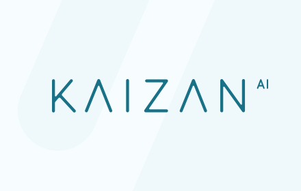

The role of Client Workshops in enterprise relationships

Client workshops can play a significant role in building strategic relationships in the B2B context. When conducted thoughtfully, workshops can help foster trust, collaboration, and alignment of goals between your organisation and your clients. They serve as valuable tools to strengthen relationships and drive business growth. In this guide, we will delve into the strategies and best practices for client workshops, enabling you to create engaging and productive environments that facilitate meaningful interactions and drive mutual success. With the ultimate goal being joint business plans that create greater client retention and growth.
What is a Client Workshop?
A client workshop is a structured and interactive meeting which may take place in person or as a digital meeting. The primary purpose of a client workshop is to achieve a specific set of objectives defined by the business and its clients on a key topic.
Client workshops typically involve a combination of presentations, discussions, group activities, and hands-on exercises tailored to the core topic of each session. These workshops can cover a wide range of areas, such as product or service demonstrations, problem-solving sessions, strategic planning, training, feedback collation, and more.
The key characteristics of a client workshop include:
A Structured Agenda: They have a well-defined agenda with specific objectives and activities planned to achieve those objectives.
Interactive: Client workshops are designed to engage participants actively, encouraging them to contribute their insights, ask questions, and collaborate with other participants.
Client-Centric: Workshops are tailored to address the interests, challenges, or goals of the clients, making them relevant and valuable for the participants.
Outcome-Oriented: Client workshops aim to achieve a defined set of outcomes, which may include creating an action plan to solve a business challenge, improved understanding about a particular client requirement, or alignment of goals between the client and business.
Client workshops are a versatile tool in the B2B context, used for various purposes, from educating clients about products or services to co-creating innovative solutions and addressing complex business challenges. Their effectiveness depends on careful planning, facilitation, and a focus on delivering value to the clients.
Different types of Client Workshop
Client workshops come in different forms, each designed to serve a specific purpose and meet different client needs. Some of these include:
**Product Demonstration/Training Workshop:**Training workshops are designed to educate clients on how to use a product or service effectively. They often include hands-on exercises, tutorials, and guidance to ensure clients can maximise the value of the product/service.
**Strategic Planning Workshop:**These workshops involve collaborative strategic planning sessions between the business and its clients. The overall purpose is to align goals, set objectives, and develop a strategic roadmap for future initiatives.
**Problem-Solving Workshop:**Problem-solving workshops bring clients and the business together to address specific challenges or issues faced by the clients. The workshop aims to identify solutions and create an action plan.
**Innovation Workshop:**These workshops encourage clients and the business to brainstorm and generate innovative ideas, often related to new products, services, or process improvements.
**Feedback and Improvement Workshop:**These workshops are focused on gathering feedback from clients about their experiences with the company’s products, services, or processes. It helps identify areas for improvement and enhancements.
Client Onboarding Workshop: Client onboarding workshops assist new clients in getting started with a company’s offerings. They cover essential information, procedures, and best practices to ensure a smooth set-up.
The value of Client Workshops
When planned carefully and with expert facilitation, client workshops can be highly effective in strengthening relationships with clients. Let’s explore how in more detail:
**Knowledge Transfer:**Client workshops provide an opportunity for both parties to gain a deeper understanding of each other’s businesses, challenges, and objectives. This shared understanding is the foundation for building a strong strategic partnership.
**Collaborative Problem-Solving:**Workshops can be structured to tackle specific business challenges or opportunities collaboratively. When clients and your team work together to find solutions, it not only addresses immediate issues but also demonstrates your commitment to their success.
**Strategic Planning:**Workshops can be used to develop strategic business plans and product roadmaps. Collaboratively defining long-term goals and strategies can align your organisations for mutual success.
**Market Insights:**Workshops can facilitate discussions on industry trends, market insights, and emerging opportunities. Businesses can use these insights to guide their strategies and help clients navigate market changes.
**Relationship Building:**In-person or virtual workshops create opportunities for personal interactions, relationship building, and networking. Strong personal relationships are fundamental to creating long-term business relationships.
**Education and Training:**Offering educational workshops or training sessions related to your products or services can empower clients to make more informed decisions. This positions your organisation as a thought leader and trusted advisor within your market.
**Feedback and Improvement:**Workshops can be a forum for clients to provide feedback on your products, services, or processes. Demonstrating a willingness to listen and make improvements based on their input builds trust and shows commitment to their satisfaction.
**Co-Innovation and Co-Creation:**Workshops can be a platform for co-innovation and co-creation of new products, services, or solutions. Collaborative innovation can set the stage for a long-term strategic partnership.
**Conflict Resolution:**If conflicts or issues arise in the course of your partnership, workshops can serve as a structured and neutral platform to address and resolve these challenges, preventing them from damaging the relationship.
What challenges can I expect when facilitating a Client Workshop and how can I mitigate these?
Facilitating a client workshop can be a rewarding experience, but it also comes with its challenges. Here are some challenges which you may face and strategies to help you mitigate those challenges to ensure a successful workshop:
Client Expectations
Ensuring that you understand and meet the client’s expectations for the workshop can be challenging and misalignment in expectations can lead to dissatisfaction. By clearly defining the workshop’s objectives and outcomes, your clients can have a clear understanding of the workshop.
Participant Engagement
Keeping all workshop participants engaged and actively participating throughout the session can be difficult, especially if some are disinterested or reluctant. Use a variety of interactive techniques, such as group discussions and hands-on activities as well as open-ended questions to foster active participation.
Managing Diverse Perspectives
Participants may have diverse opinions, interests, and goals. Balancing and managing these different perspectives to achieve the workshop’s objectives can be challenging. Create an open and inclusive environment all where participants feel comfortable sharing their thoughts and ideas. Encourage active listening and respectful communication among participants.
Time Management
Staying on schedule and covering all planned topics within the allocated time frame can be challenging. Stick to the agenda and allocate time for each activity or discussion. Be prepared to adapt if you notice that certain topics require more or less time than initially planned.
Handling Disruptions
Unexpected disruptions, technical issues, or conflicts among participants can occur during the workshop, requiring quick and effective resolution. Be prepared to manage challenging situations or difficult participants. Address disruptions calmly and professionally, and redirect the conversation back to the workshop’s objectives.
Facilitation Skills
Facilitating a workshop effectively, especially if it involves guiding discussions, managing conflicts, and ensuring a safe and inclusive environment, requires strong facilitation skills. Consider attending workshops or training sessions on facilitation techniques and effective communication to enhance your skills.
Complex Content
If the workshop covers complex or technical content, simplifying it for all participants while still delivering value can be a significant challenge. Use visual aids like slides, charts, and diagrams to help convey information more effectively. Make sure your visuals are clear and support the key points you’re discussing.
Adapting to Remote Workshops
If the workshop is conducted virtually, you may face challenges related to technology. Choose reliable video conferencing and collaboration tools such as Zoom, Microsoft Teams, or Google Meet. Familiarise yourself with these platforms and their features to ensure a smooth experience. Set-up a test well before the workshop to ensure that all participants can access the platform, share screens, use chat functions, and engage in video and audio discussions without technical glitches.
Follow-Up and Action Plans
Ensuring that the workshop leads to actionable outcomes and that follow-up plans are established and executed can be challenging. After the workshop, provide follow-up materials or resources to reinforce key points and keep in touch with clients to ensure that they are implementing what they’ve learned.
Language and Cultural Differences
If participants come from diverse cultural backgrounds or speak different languages, overcoming language and cultural barriers can be a challenge. When assigning tasks or activities, provide clear and concise instructions. Ensure that participants understand what is expected of them, and be available to answer any questions.
Final Thoughts
Client workshops serve as multifaceted tools that can contribute to relationship building, educating clients, problem-solving, driving innovation, and achieving business goals. When executed effectively, these workshops can lead to stronger, more strategic, and enduring relationships between businesses and their clients. Whether conducted in person or remotely, successful facilitation of these workshops requires careful planning, effective communication, and the ability to adapt to various challenges. By setting clear objectives, engaging participants, and utilising appropriate tools and techniques, facilitators can create impactful and productive workshop experiences. Moreover, continuous improvement, feedback integration, and a commitment to meeting client needs are essential for ensuring the long-term success of these workshops. With these strategies in mind, client workshops can serve as valuable platforms for achieving shared objectives, enhancing client relationships, and driving meaningful outcomes.